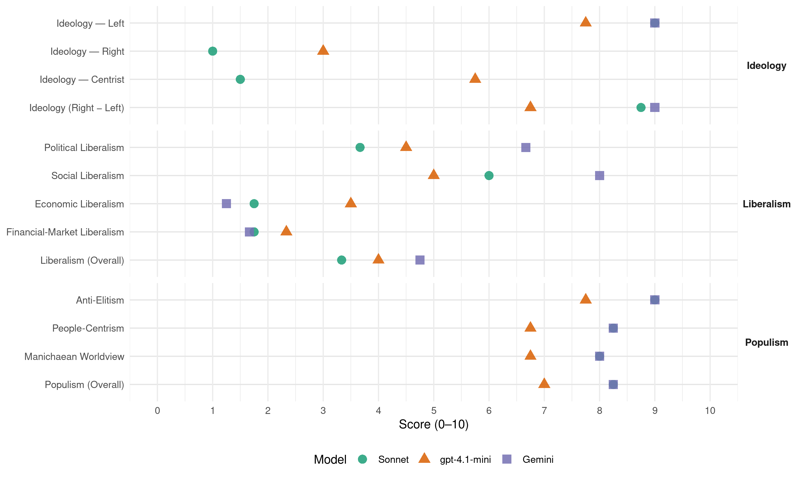

FAD (Panama, 2019)
manifesto_id 160221_201905
Get full text: This site shows derived annotations and short verbatim quotes only. The full manifesto text is © Manifesto Project / WZB — obtain it via manifesto-project.wzb.eu using the manifesto_id above.
Headline scores
| Dimension | Sonnet | gpt-4.1-mini | Gemini |
|---|---|---|---|
| Populism (Overall) | 8.2 | 7.0 | 8.2 |
| Anti-Elitism | 9.0 | 7.8 | 9.0 |
| People-Centrism | 8.2 | 6.8 | 8.2 |
| Manichaean Worldview | 8.0 | 6.8 | 8.0 |
| Ideology (Right − Left) | 8.8 | 6.8 | 9.0 |
| Liberalism (Overall) | 3.3 | 4.0 | 4.8 |
| Political Liberalism | 3.7 | 4.5 | 6.7 |
| Social Liberalism | 6.0 | 5.0 | 8.0 |
| Economic Liberalism | 1.8 | 3.5 | 1.2 |
| Financial-Market Liberalism | 1.8 | 2.3 | 1.7 |
Evidence per dimension
Economic Liberalism
Gemini · score 1.0 · verified · chunk 1
“congelarán los precios de los productos”
Se congelarán los precios de los productos sensitivos para la alimentación
Gemini · score 2.0 · verified · chunk 2
“políticas de control de precios en los productos básicos”
PROPUESTA PARA EL ACCESO DE LA POBLACIÓN A ALIMENTOS Políticas de control de precios en los productos básicos para satisfacer las necesidades de vida de la población.
Gemini · score 1.0 · verified · chunk 3
“prohibir todo vestigio de externalización”
atención primaria como estrategia en distintas zonas del país. Prohibir todo vestigio de externalización, privatización de los servicios
Gemini · score 1.0 · verified · chunk 4
“renacionalización de las empresas privatizadas”
Nombrar una Comisión de Expertos para la renacionalización de las empresas privatizadas. Se debe fortalecer
gpt-4.1-mini · score 3.0 · verified · chunk 1
“Un estado participativo y de control en la actividad económica”
…Un estado participativo y de control en la actividad económica. Iniciar y culminar en un proceso constituyente originario que represente los intereses de la mayoría del pueblo. Producir un desarrollo económico sostenible, en igualdad de oportunidades, armónico en su crecimiento económico sectorial, en equilibrio con la naturaleza. La planificación como instrumento macroeconómico y orientador de los planes y decisiones de la política económica…
gpt-4.1-mini · score 3.0 · verified · chunk 2
“El modelo de crecimiento económico impuesto desde la década del setenta en Panamá, basado en una mayor apertura económica y la desregulación”
El modelo de crecimiento económico impuesto desde la década del setenta en Panamá, basado en una mayor apertura económica y la desregulación. Y la política fiscal regresiva del Estado, ha profundizado la situación de pobreza e inequidad social de la población panameña.
gpt-4.1-mini · score 6.0 · verified · chunk 3
“la práctica especulativa de los promotores de vivienda que lucran de las necesidades de viviendas de los panameños”
La práctica especulativa de los promotores de vivienda que lucran de las necesidades de viviendas de los panameños, poniendo precios 4 y 5 veces por encima de los costos de construcción, lo cual afecta a los sectores medios y profesionales y los sectores populares.
gpt-4.1-mini · score 2.0 · verified · chunk 4
“modelo económico basado en el consumismo y el derroche de energía”
…no menciona para nada, lo que a nuestro criterio es lo esencial: el modelo económico basado en el consumismo y el derroche de energía…
Sonnet · score 1.0 · verified · chunk 1
“Estado regulador de la actividad económica”
Aprobar la normativa legal que se requiera para hacer un Estado regulador de la actividad económica, optando por la planificación como instrumento esencial de gestión gubernamental.
Sonnet · score 2.0 · verified · chunk 2
“Recuperación de las empresas estratégicas privatizadas”
Sistema Fiscal progresivo… Recuperación de las empresas estratégicas privatizadas. Estableciendo precios justos al consumidor de acuerdo a escala de consumo y políticas de incentivo a la actividad económica productiva.
Sonnet · score 2.0 · verified · chunk 3
“modelo económico consumista, concentrador, excluyente”
La situación habitacional solo expresa los estragos producidos por un modelo económico consumista, concentrador, excluyente y depredador de los recursos naturales
Sonnet · score 2.0 · verified · chunk 4
“renacionalización de las empresas privatizadas”
Nombrar una Comisión de Expertos para la renacionalización de las empresas privatizadas. Se debe fortalecer institucionalmente a entidades
Financial-Market Liberalism
Gemini · score 1.0 · verified · chunk 1
“Regular la actividad de la banca”
Regular la actividad de la banca y de seguros para que
Gemini · score 2.0 · verified · chunk 2
“Regular la actividad de la banca y de seguros”
Aseguraremos créditos a los pequeños y medianos productores agropecuarios e industriales mediante una política de finanzas articulada con la planificación económica. Regular la actividad de la banca y de seguros para que este en sintonía
Gemini · score 2.0 · verified · chunk 4
“programa de micro-finanzas con recursos nacionales y de la banca”
Crear, normar y activar programa de micro-finanzas con recursos nacionales y de la banca para la activación de estas empresas.
gpt-4.1-mini · score 2.0 · verified · chunk 1
“El monto de dinero lavado en el sistema financiero internacional representaría entre el 2,1% al 4% del PIB mundial”
…El monto de dinero lavado en el sistema financiero internacional representaría entre el 2,1% al 4% del PIB mundial (1,6 billones de dólares). Datos de la NASA, los niveles de emisión de dióxido de carbono están llegando a máximos no registrados, desde hace más de 650.000 años. Estos resultados y efectos por la aplicación del modelo neoliberal es irreconciliables con un modelo económico orientado a la satisfacción de las necesidades fundamentales de la población en su totalidad…
gpt-4.1-mini · score 3.0 · verified · chunk 2
“Regular la actividad de la banca y de seguros para que este en sintonía con los objetivos económicos de desarrollo del plan de gobierno”
Regular la actividad de la banca y de seguros para que este en sintonía con los objetivos económicos de desarrollo del plan de gobierno, en los aspectos relacionados a las tasas crediticias, créditos para atender eficazmente las actividades agropecuarias como a las pequeñas y medianas empresas de productores y comerciantes.
gpt-4.1-mini · score 2.0 · verified · chunk 4
“los grupos que quitan y ponen Presidentes en acuerdos con la Embajada de los Estados Unidos”
…han sido utilizados por los grupos de poder económico, de la partidocracia que controla los partidos políticos tradicionales, de los grupos que quitan y ponen Presidentes en acuerdos con la Embajada de los Estados Unidos…
Sonnet · score 1.0 · verified · chunk 1
“Regular la actividad de la banca y de seguros”
Regular la actividad de la banca y de seguros para que este en sintonía con los objetivos económicos de desarrollo del plan de gobierno, en los aspectos relacionados a las tasas crediticias.
Sonnet · score 2.0 · verified · chunk 2
“Regular la actividad de la banca y de seguros”
Regular la actividad de la banca y de seguros para que este en sintonía con los objetivos económicos de desarrollo del plan de gobierno, en los aspectos relacionados a las tasas crediticias
Sonnet · score 2.0 · verified · chunk 3
“privatizar los fondos de la CSS”
Convocar a un dialogo nacional con la propuesta popular de mantener el sistema solidario eliminando el segundo pilar de las pensiones actual… privatizar los fondos de la CSS.
Sonnet · score 2.0 · verified · chunk 4
“Instituciones Financieras Internacionales sin importar las consecuencias”
al Departamento de Estado de los Estados Unidos y las Instituciones Financieras Internacionales sin importar las consecuencias causantes a la población
Political Liberalism
Gemini · score 4.0 · mixed · chunk 1
“independencia de los poderes del Estado”
la independencia de los poderes del Estado, un mito y el Estado
Gemini · score 7.0 · verified · chunk 2
“la independencia de otros poderes es esencial para su buen funcionamiento”
La Corte Suprema de Justicia es un órgano fundamental en un Estado de Derecho, y su independencia de otros poderes es esencial para su buen funcionamiento. Nuestro principal norte es tener
Gemini · score 8.0 · verified · chunk 3
“calidad de un ESTADO DE DERECHO”
herramienta judicial que le da la calidad de un ESTADO DE DERECHO a un país y la seguridad jurídica
Gemini · score 5.0 · verified · chunk 4
“La democracia política está restringida”
en la distribución de la riqueza La democracia política está restringida a procesos electorales que no son democráticos.
gpt-4.1-mini · score 3.0 · verified · chunk 1
“la independencia de los poderes del Estado, un mito y el Estado de derecho desestimado”
…Estado en el que la institucionalidad es una gran farsa; la independencia de los poderes del Estado, un mito y el Estado de derecho desestimado si no se cuenta con influencias y dinero. Una minoría, que representa la oligarquía política y económica, mantiene el control del Estado, amparados por una Constitución antidemocrática y antipopular. Los partidos políticos tradicionales carecen de legitimidad; su práctica de gobierno no se corresponde con principios y programas propuestos de cara a las elecciones…
gpt-4.1-mini · score 4.0 · verified · chunk 2
“la libertad de expresión, libertad de prensa, el derecho a la información veraz”
Las libertades, derechos constitucionales, son sujetos a acciones represivas al reclaman sus derechos, podemos señalar las murallas y dificultades que el sistema impone a los sectores populares en términos de la libertad de expresión, libertad de prensa, el derecho a la información veraz el derecho a la protesta, el derecho a la manifestación, el derecho a la organización de sectores consectarios al status quo.
gpt-4.1-mini · score 8.0 · verified · chunk 3
“la administración de justicia, que no es más que aquella herramienta judicial que le da la calidad de un ESTADO DE DERECHO a un país”
En la actualidad la nación confronta una serie de problemas que se relacionan con la administración de justicia, que no es más que aquella herramienta judicial que le da la calidad de un ESTADO DE DERECHO a un país y la seguridad jurídica a los asociados que habitan o forman parte de esta nación.
gpt-4.1-mini · score 3.0 · verified · chunk 4
“La democracia política está restringida a procesos electorales que no son democráticos”
…En lo político, en Panamá no hay democracia económica para la mayoría de los panameños que están marginados en la distribución de la riqueza La democracia política está restringida a procesos electorales que no son democráticos…
Sonnet · score 3.0 · verified · chunk 1
“democracia real, que sea participativa, protagónica”
Un Estado Democratizado, donde impere una democracia real, que sea participativa, protagónica y deliberativa, que responda y esté al servicio del pueblo como único y legitimo soberano.
Sonnet · score 3.0 · verified · chunk 2
“Una Constituyente Originaria Autoconvocada, con plenos poderes”
Cambiar esto, hacer un ataque frontal a la corrupción, no se puede hacer con esta clase corrupta que nos ha gobernado siempre… Una Constituyente Originaria Autoconvocada, con plenos poderes, es la única solución.
Sonnet · score 5.0 · verified · chunk 3
“transformación estructural, a través de una Constituyente Originaria”
Nuestra propuesta se sustenta en: En una transformación estructural, a través de una Constituyente Originaria.
Sonnet · score 4.0 · mixed · chunk 4
“democracia política está restringida a procesos electorales”
En Panamá no hay democracia económica para la mayoría de los panameños. La democracia política está restringida a procesos electorales que no son democráticos
Liberalism (Overall)
Gemini · score 4.0 · verified · chunk 1
“congelarán los precios de los productos”
Se congelarán los precios de los productos sensitivos para la alimentación
Gemini · score 5.0 · verified · chunk 2
“la independencia de otros poderes es esencial para su buen funcionamiento”
La Corte Suprema de Justicia es un órgano fundamental en un Estado de Derecho, y su independencia de otros poderes es esencial para su buen funcionamiento. Nuestro principal norte es tener
Gemini · score 6.0 · verified · chunk 3
“calidad de un ESTADO DE DERECHO”
herramienta judicial que le da la calidad de un ESTADO DE DERECHO a un país y la seguridad jurídica
Gemini · score 4.0 · verified · chunk 4
“renacionalización de las empresas privatizadas”
Nombrar una Comisión de Expertos para la renacionalización de las empresas privatizadas. Se debe fortalecer
gpt-4.1-mini · score 3.0 · verified · chunk 1
“Un estado participativo y de control en la actividad económica”
…Un estado participativo y de control en la actividad económica. Iniciar y culminar en un proceso constituyente originario que represente los intereses de la mayoría del pueblo. Producir un desarrollo económico sostenible, en igualdad de oportunidades, armónico en su crecimiento económico sectorial, en equilibrio con la naturaleza. La planificación como instrumento macroeconómico y orientador de los planes y decisiones de la política económica…
gpt-4.1-mini · score 3.0 · verified · chunk 2
“Regular la actividad de la banca y de seguros para que este en sintonía con los objetivos económicos de desarrollo del plan de gobierno”
Regular la actividad de la banca y de seguros para que este en sintonía con los objetivos económicos de desarrollo del plan de gobierno, en los aspectos relacionados a las tasas crediticias, créditos para atender eficazmente las actividades agropecuarias como a las pequeñas y medianas empresas de productores y comerciantes.
gpt-4.1-mini · score 7.0 · verified · chunk 3
“la administración de justicia, que no es más que aquella herramienta judicial que le da la calidad de un ESTADO DE DERECHO a un país”
En la actualidad la nación confronta una serie de problemas que se relacionan con la administración de justicia, que no es más que aquella herramienta judicial que le da la calidad de un ESTADO DE DERECHO a un país y la seguridad jurídica a los asociados que habitan o forman parte de esta nación.
gpt-4.1-mini · score 3.0 · verified · chunk 4
“La democracia política está restringida a procesos electorales que no son democráticos”
…En lo político, en Panamá no hay democracia económica para la mayoría de los panameños que están marginados en la distribución de la riqueza La democracia política está restringida a procesos electorales que no son democráticos…
Sonnet · score 3.0 · verified · chunk 1
“prevaleciendo el interés público sobre lo privado”
tendiente al bien común, prevaleciendo el interés público sobre lo privado y lo social sobre lo particular, siendo de imperante necesidad la construcción de un plan integral de desarrollo productivo.
Sonnet · score 3.0 · verified · chunk 2
“el modelo de crecimiento económico impuesto”
El modelo de crecimiento económico impuesto desde la década del setenta en Panamá, basado en una mayor apertura económica y la desregulación. Y la política fiscal regresiva del Estado, ha profundizado la situación de pobreza
Sonnet · score 4.0 · verified · chunk 3
“Prohibir todo vestigio de externalización, privatización”
Prohibir todo vestigio de externalización, privatización de los servicios de salud.
Sonnet · score 4.0 · mixed · chunk 4
“políticas públicas de corte neoliberal que afectan el acceso”
la implementación de políticas públicas de corte neoliberal que afectan el acceso a la salud, a la educación, al agua potable, a la vivienda
Anti-Elitism
Gemini · score 9.0 · verified · chunk 1
“oligarquías políticas y económicas”
bajo el control de oligarquías políticas y económicas y amparado por una Constitución
Gemini · score 9.0 · verified · chunk 2
“luchas por superar el dominio de las clases dominantes”
conciencia social alcanzados como producto del desarrollo de la historia, la experiencia, las luchas por superar el dominio de las clases dominantes y las profundas aspiraciones por la paz verdadera
Gemini · score 9.0 · verified · chunk 3
“intereses de la clase dominante”
que históricamente han respondido a los intereses de la clase dominante, que salvaguardan su seguridad
Gemini · score 9.0 · verified · chunk 4
“la partidocracia, aliada al capital transnacional”
Para los grupos de poder económico, para la partidocracia, aliada al capital transnacional, la acumulación de sus ganancias
gpt-4.1-mini · score 9.0 · verified · chunk 1
“Una minoría, que representa la oligarquía política y económica, mantiene el control del Estado”
…Estado en el que la institucionalidad es una gran farsa; la independencia de los poderes del Estado, un mito y el Estado de derecho desestimado si no se cuenta con influencias y dinero. Una minoría, que representa la oligarquía política y económica, mantiene el control del Estado, amparados por una Constitución antidemocrática y antipopular. Los partidos políticos tradicionales carecen de legitimidad;…
gpt-4.1-mini · score 8.0 · verified · chunk 2
“la desigualdad social favorece y privilegia a sectores, minoritarios desde el punto de vista económico, político y social”
La mayoría de las personas en el país son víctimas de la discriminación social. Las discriminaciones sociales llevan a tratos preferenciales y favorables a sectores minoritarios y privilegiados desde el punto de vista económico, político y social.
gpt-4.1-mini · score 7.0 · verified · chunk 3
“las leyes que regulan la administración de justicia provienen de Órganos del Estado que históricamente han respondido a los intereses de la clase dominante”
Las leyes que regulan la administración de justicia provienen de Órganos del Estado que históricamente han respondido a los intereses de la clase dominante, que salvaguardan su seguridad y entienden el Estado de Derecho en base a las leyes que les favorecen.
gpt-4.1-mini · score 7.0 · verified · chunk 4
“los grupos de poder económico, de la partidocracia”
…han sido utilizados por los grupos de poder económico, de la partidocracia que controla los partidos políticos tradicionales, de los grupos que quitan y ponen Presidentes en acuerdos con la Embajada de los Estados Unidos…
Sonnet · score 10.0 · verified · chunk 1
“oligarquía política y económica, mantiene el control del Estado”
Una minoría, que representa la oligarquía política y económica, mantiene el control del Estado, amparados por una Constitución antidemocrática y antipopular.
Sonnet · score 9.0 · verified · chunk 2
“gobiernos Elitistas, Militaristas, Empresariales o camuflados”
Desde la firma de la declaración Universal de los DH gobiernos Elitistas, Militaristas, Empresariales o camuflados de Nacionalistas, o Multiclasistas, así lo demuestra.
Sonnet · score 8.0 · verified · chunk 3
“intereses de la clase dominante”
Las leyes que regulan la administración de justicia provienen de Órganos del Estado que históricamente han respondido a los intereses de la clase dominante, que salvaguardan su seguridad
Sonnet · score 9.0 · verified · chunk 4
“grupos de poder económico, para la partidocracia, aliada al capital transnacional”
Para los grupos de poder económico, para la partidocracia, aliada al capital transnacional, la acumulación de sus ganancias es el ‘desarrollo del país’
Ideology — Centrist
gpt-4.1-mini · score 7.0 · verified · chunk 1
“Un Estado participativo y regulador de la actividad económica, tendiente al bien común”
…Un Estado participativo y regulador de la actividad económica, tendiente al bien común, prevaleciendo el interés público sobre lo privado y lo social sobre lo particular, siendo de imperante necesidad la construcción de un plan integral de desarrollo productivo y sostenible en el tiempo. Que la máxima no sea el mercado y la consecuente acumulación de riquezas y poder en unos pocos en perjuicio de los trabajadores, capas medias, grupos profesionales, de los sectores más vulnerables…
gpt-4.1-mini · score 6.0 · verified · chunk 2
“la participación ciudadana mediante denuncias, cabildos populares, formación del tema es imprescindible”
La respuesta a la corrupción y su erradicación tiene como punto de partida la parte institucional… La participación ciudadana mediante denuncias, cabildos populares, formación del tema es imprescindible.
gpt-4.1-mini · score 5.0 · verified · chunk 3
“participen diversos sectores de la población, facultades de Derecho, los gremios de abogados”
La escogencia de Magistrados de la Corte Suprema de Justicia y la de Procurador General de la Nación y de la Administración, debe ser efectuada por medio de una comisión que examine la idoneidad, capacidad y competencia de los candidatos a tales cargos, previo examen de que reúnen los requisitos mínimos que exigen la Constitución Nacional y las Leyes, para luego ser sometidos al escrutinio público en el que participen diversos sectores de la población, facultades de Derecho, los gremios de abogados, las Asociaciones de Jueces y Magistrados(as) del Órgano Judicial.
gpt-4.1-mini · score 5.0 · verified · chunk 4
“tenemos una visión integral del desarrollo (sostenible)”
…El país son ellos. El resto de los panameños que tenemos una visión integral del desarrollo (sostenible), somos obstáculos, personas “egoístas”, así como los compañeros ngobe buglé que luchan por defender sus recursos naturales…
Sonnet · score 1.0 · verified · chunk 1
“intereses del pueblo prevalezcan sobre los intereses”
Que los intereses del pueblo prevalezcan sobre los intereses de los que ostentan, dirigen y controlan la actividad económica por consiguiente el poder político.
Sonnet · score 2.0 · verified · chunk 2
“Participaran con propuestas y acuerdos consensuados”
Participaran con propuestas y acuerdos consensuados entre el gobierno y todos los sectores y organizaciones del agro involucrados, tanto los pequeños y medianos productores
Sonnet · score 2.0 · verified · chunk 3
“sin ligazones ni adeudos”
el Frente Amplio por la Democracia FAD, sin ligazones ni adeudos con los intereses de quienes han incumplido las responsabilidades irrenunciables del Estado
Sonnet · score 1.0 · verified · chunk 4
“carácter nacional popular, democrático, patriótico”
política exterior en conformidad con el carácter nacional popular, democrático, patriótico, amplio, intercultural, pluralista, independiente
Ideology — Left
Gemini · score 9.0 · verified · chunk 1
“modelo económico neoliberal dominante”
El modelo económico neoliberal dominante a nivel mundial, se impone
Gemini · score 9.0 · verified · chunk 2
“la concentración de la riqueza se agrava con el modelo neoliberal”
Solo 17 balboas de cada 100 que se generan, corresponden a los trabajadores. Hace 4 años eran 22 balboas. La concentración de la riqueza se agrava con el modelo neoliberal. Mientras que el poder adquisitivo de los salarios disminuye
Gemini · score 9.0 · verified · chunk 3
“aplicación de medidas neoliberales”
Por otra parte, la aplicación de medidas neoliberales ha contribuido al deterioro del papel del Estado
Gemini · score 9.0 · verified · chunk 4
“modelo económico basado en el consumismo”
lo que a nuestro criterio es lo esencial: el modelo económico basado en el consumismo y el derroche de energía.
gpt-4.1-mini · score 9.0 · verified · chunk 1
“Producir los cambios estructurales necesarios en el ámbito económico, político y social”
…La posición política del FAD es concreta e impostergable, la de producir los cambios estructurales necesarios en el ámbito económico, político y social, lo que implica un proceso constante de trasformaciones, para tal fin son necesarios hombres y mujeres organizados y formados, con férrea voluntad y disciplina, comprometidos en la lucha por la vida, los derechos humanos, el bien común. Objetivos Orientadores Ser creíble, coherente y realista en sus enunciados de acciones a realizar y así cumplir con los objetivos estratégicos y tácticos…
gpt-4.1-mini · score 8.0 · verified · chunk 2
“Incrementar los ingresos de estado para gestar políticas de distribución de las riquezas”
Incrementar los ingresos de estado para gestar políticas de distribución de las riquezas. El que gane más dinero pagará más impuestos, revirtiendo la situación actual que es todo lo contrario.
gpt-4.1-mini · score 7.0 · verified · chunk 3
“la lucha contra la desigualdad y la exclusión social”
La propuesta del FAD contra la inseguridad, la violencia y la delincuencia tiene como base la lucha contra la desigualdad y la exclusión social. Impulsamos una política de seguridad ciudadana integral, que considere atender los riesgos sociales como la pobreza, la inequidad social, que combata las violaciones de los derechos humanos a manos de agentes estatales y no estatales.
gpt-4.1-mini · score 7.0 · verified · chunk 4
“modelo económico basado en el consumismo y el derroche de energía”
…no menciona para nada, lo que a nuestro criterio es lo esencial: el modelo económico basado en el consumismo y el derroche de energía…
Sonnet · score 10.0 · verified · chunk 1
“modelo económico neoliberal dominante”
El modelo económico neoliberal dominante a nivel mundial, se impone en nuestro país. Vende la promesa de lograr, garantizando el libre mercado una sociedad más justa, armoniosa y prospera.
Sonnet · score 9.0 · verified · chunk 2
“Sistema Fiscal progresivo”
El que gane más dinero pagará más impuestos, revirtiendo la situación actual que es todo lo contrario. Sistema Fiscal progresivo: Administración fiscal que permitan una efectiva recaudación y una reforma radical del régimen tributario
Sonnet · score 8.0 · verified · chunk 3
“medidas neoliberales ha contribuido al deterioro”
la aplicación de medidas neoliberales ha contribuido al deterioro del papel del Estado como garante de los derechos de la sociedad
Sonnet · score 9.0 · verified · chunk 4
“contrario al neoliberalismo”
considerando el nuevo modelo económico que propone el FAD, contrario al neoliberalismo. Se cancelarán aquellas concesiones que atenten contra la sostenibilidad
Ideology (Right − Left)
Gemini · score 9.0 · verified · chunk 1
“modelo económico neoliberal dominante”
El modelo económico neoliberal dominante a nivel mundial, se impone
Gemini · score 9.0 · verified · chunk 2
“la concentración de la riqueza se agrava con el modelo neoliberal”
Solo 17 balboas de cada 100 que se generan, corresponden a los trabajadores. Hace 4 años eran 22 balboas. La concentración de la riqueza se agrava con el modelo neoliberal. Mientras que el poder adquisitivo de los salarios disminuye
Gemini · score 9.0 · verified · chunk 3
“aplicación de medidas neoliberales”
Por otra parte, la aplicación de medidas neoliberales ha contribuido al deterioro del papel del Estado
Gemini · score 9.0 · verified · chunk 4
“esquema neoliberal que hasta ahora”
economía continuará creciendo bajo el mismo esquema neoliberal que hasta ahora. Ningún gobierno se ha planteado
gpt-4.1-mini · score 8.0 · verified · chunk 1
“La posición política del FAD es concreta e impostergable, la de producir los cambios estructurales”
…La posición política del FAD es concreta e impostergable, la de producir los cambios estructurales necesarios en el ámbito económico, político y social, lo que implica un proceso constante de trasformaciones, para tal fin son necesarios hombres y mujeres organizados y formados, con férrea voluntad y disciplina, comprometidos en la lucha por la vida, los derechos humanos, el bien común. Objetivos Orientadores Ser creíble, coherente y realista en sus enunciados de acciones a realizar y así cumplir con los objetivos estratégicos y tácticos…
gpt-4.1-mini · score 7.0 · verified · chunk 2
“Incrementar los ingresos de estado para gestar políticas de distribución de las riquezas”
Incrementar los ingresos de estado para gestar políticas de distribución de las riquezas. El que gane más dinero pagará más impuestos, revirtiendo la situación actual que es todo lo contrario.
gpt-4.1-mini · score 6.0 · verified · chunk 3
“la lucha contra la desigualdad y la exclusión social”
La propuesta del FAD contra la inseguridad, la violencia y la delincuencia tiene como base la lucha contra la desigualdad y la exclusión social. Impulsamos una política de seguridad ciudadana integral, que considere atender los riesgos sociales como la pobreza, la inequidad social, que combata las violaciones de los derechos humanos a manos de agentes estatales y no estatales.
gpt-4.1-mini · score 6.0 · verified · chunk 4
“modelo económico basado en el consumismo y el derroche de energía”
…no menciona para nada, lo que a nuestro criterio es lo esencial: el modelo económico basado en el consumismo y el derroche de energía…
Sonnet · score 10.0 · verified · chunk 1
“anti-corporativa, redistribución, explotación de seres humanos”
La realidad a nivel mundial revela la real razón de ser del sistema capitalista en su fase neoliberal: La explotación de seres humanos y la naturaleza.
Sonnet · score 8.0 · verified · chunk 2
“demoler el modelo neoliberal de mercado”
se articulen y aglutinen sus sectores para ser capaces de crear poder popular y demoler el modelo neoliberal de mercado, logrando el derrocamiento del poder existente.
Sonnet · score 8.0 · verified · chunk 3
“contrario al neoliberalismo, que prioriza la vida”
políticas que se entrecruzan… un modelo contrario al neoliberalismo, que prioriza la vida por encima de cualquier cosa
Sonnet · score 9.0 · verified · chunk 4
“modelo excluyente neoliberal, que prioriza la máxima ganancia”
El modelo excluyente neoliberal, que prioriza la máxima ganancia en lugar de la realización integral de los seres humanos
Ideology — Right
gpt-4.1-mini · score 3.0 · verified · chunk 1
“Relaciones exteriores en base a una política independiente, Anti-hegemónica”
…Promover la más amplia participación ciudadana en la toma de decisiones. Relaciones exteriores en base a una política independiente, Anti-hegemónica, fraterna, solidaria y respetuosa de la autodeterminación de todos los pueblos. La defensa irrestricta de todos los Derechos Humanos, desde una postura intransigentemente Ética. Alcanzar tan genuino propósito implica elevar el nivel de formación, conciencia, organización y acción del pueblo trabajador…
gpt-4.1-mini · score 3.0 · verified · chunk 4
“la partidocracia que controla los partidos políticos tradicionales”
…han sido utilizados por los grupos de poder económico, de la partidocracia que controla los partidos políticos tradicionales, de los grupos que quitan y ponen Presidentes en acuerdos con la Embajada de los Estados Unidos…
Sonnet · score 1.0 · verified · chunk 1
“política independiente, Anti-hegemónica, fraterna, solidaria”
Relaciones exteriores en base a una política independiente, Anti-hegemónica, fraterna, solidaria y respetuosa de la autodeterminación de todos los pueblos.
Sonnet · score 1.0 · verified · chunk 2
“proteger el mercado interno”
estableciendo los márgenes del productor a la cadena de distribución y comercialización, para lo cual se debe proteger el mercado interno.
Sonnet · score 1.0 · verified · chunk 3
“Soberanía”
que responda a los intereses de la mayoría del pueblo panameño, respetuoso de los ecosistemas y forjador-fortalecedor de nuestra Soberanía
Sonnet · score 1.0 · verified · chunk 4
“política migratoria que proteja el empleo de los nacionales”
Política migratoria que proteja el empleo de los nacionales y brinde atención a emigrantes sin xenofobia ni acoso
Manichaean Worldview
Gemini · score 8.0 · verified · chunk 1
“falsedades, engaños y mentiras”
con gruesa hojarasca con falsedades, engaños y mentiras, dominio ideológico y miedo
Gemini · score 8.0 · verified · chunk 2
“hipocresía de quienes gobiernan en el ataque a la corrupción”
Por ello, lo que se observa es hipocresía de quienes gobiernan en el ataque a la corrupción. Este ataque es selectivo.
Gemini · score 8.0 · verified · chunk 3
“Al Dios dinero nada le importa”
moradores. Al Dios dinero nada le importa más que a él mismo, el dinero.
Gemini · score 8.0 · verified · chunk 4
“Al Dios dinero nada le importa”
protestas de los moradores. Al Dios dinero nada le importa más que a él mismo, el dinero.
gpt-4.1-mini · score 8.0 · verified · chunk 1
“Los que administran el Estado utilizan, la represión y violencia de la fuerza pública”
…Se utiliza la coacción, el clientelismo, prebendas, amenazas y mentiras, para manipular, engañar o comprar las conciencias de la población. Se ha estimulado y mantenido el clientelismo político como forma de lograr y mantener el poder y la farsa de la democracia representativa. Los que administran el Estado utilizan, la represión y violencia de la fuerza pública y organismos de seguridad de esa manera, imponer su decisión que por lo general atentan contra la democracia y el respeto de los derechos humanos en todos sus niveles, incluso la vida. Los grupos que siempre han gobernado…
gpt-4.1-mini · score 7.0 · verified · chunk 2
“la corrupción es un fenómeno que nace en un medio social determinado”
La corrupción es un fenómeno que nace en un medio social determinado. En términos económico-políticos y sociales, esto significa un abuso del poder que emana de los sectores hegemónicos, que les permite tomar y ejecutar las decisiones finales de un país en función de sus mezquinos intereses.
gpt-4.1-mini · score 5.0 · verified · chunk 3
“El Dios dinero nada le importa más que a él mismo, el dinero”
Al Dios dinero nada le importa más que a él mismo, el dinero. El FAD plantea una Política Energética que responda al modelo económico sostenible, que prioriza la satisfacción de las necesidades del pueblo panameño, que respete los ecosistemas y construya y fortalezca nuestra Soberanía.
gpt-4.1-mini · score 7.0 · verified · chunk 4
“Al Dios dinero nada le importa más que a él mismo, el dinero”
…Esto produjo enfrentamientos importantes entre estos dos grupos de alto poder económico. Se añaden otras plantas aún más contaminantes… Al Dios dinero nada le importa más que a él mismo, el dinero…
Sonnet · score 9.0 · verified · chunk 1
“la institucionalidad es una gran farsa”
Vivimos en un Estado en el que la institucionalidad es una gran farsa; la independencia de los poderes del Estado, un mito y el Estado de derecho desestimado si no se cuenta con influencias y dinero.
Sonnet · score 8.0 · verified · chunk 2
“Impedir a toda costa que los de abajo se den cuenta”
Su efecto sobre el crecimiento económico es mínimo… Impedir a toda costa que los de abajo se den cuenta real de lo que hacen los de arriba y las causas que lo haga posible.
Sonnet · score 7.0 · verified · chunk 3
“Al Dios dinero nada le importa”
Se añaden otras plantas aún más contaminantes a base de carbón… Al Dios dinero nada le importa más que a él mismo, el dinero.
Sonnet · score 8.0 · verified · chunk 4
“Al Dios dinero nada le importa más que a él mismo”
pese a las protestas de los moradores. Al Dios dinero nada le importa más que a él mismo, el dinero. El FAD plantea una Política Energética
People-Centrism
Gemini · score 9.0 · verified · chunk 1
“intereses de la mayoría del pueblo”
originario que represente los intereses de la mayoría del pueblo. Producir un desarrollo
Gemini · score 8.0 · verified · chunk 2
“siendo el pueblo trabajador y sectores medios los más afectados”
seguridad y soberanía alimentaria el acceso a productos básicos de producción nacional. siendo el pueblo trabajador y sectores medios los más afectados. PROPUESTA DE SOBERANÍA ALIMENTARIA
Gemini · score 8.0 · verified · chunk 3
“Deporte como un derecho del pueblo”
Frente Amplio por la Democracia reconoce el Deporte como un derecho del pueblo, el cual se traduce
Gemini · score 8.0 · verified · chunk 4
“satisfacción de las necesidades del pueblo panameño”
modelo económico sostenible, que prioriza la satisfacción de las necesidades del pueblo panameño, que respete los ecosistemas
gpt-4.1-mini · score 8.0 · verified · chunk 1
“Que el pueblo sea el verdadero arquitecto de su destino”
…fortalecimiento de la representación de los sectores sociales, la cual en una constituyente originaria revestida de pleno poder, permitiría transformaciones estructurales que requiere la institucionalidad del Estado para garantizar las libertades democráticas, los derechos humanos, el bienestar e igualdad en la distribución de la riqueza, la no privatización de los servicios básicos de la población, igualmente asegurar con esta participación organizada que la nueva Constitución no represente beneficios para pocos con poder económicos; sino que garantice la calidad de la vida para todos los panameños. Que el pueblo sea el verdadero arquitecto de su destino. Se prioriza el crecimiento…
gpt-4.1-mini · score 7.0 · verified · chunk 2
“el pueblo trabajador y sectores medios los más afectados”
industrial, sobre todo el pequeño y mediano productor, que debilita y pone en peligro la seguridad y soberanía alimentaria el acceso a productos básicos de producción nacional. siendo el pueblo trabajador y sectores medios los más afectados.
gpt-4.1-mini · score 6.0 · verified · chunk 3
“participen diversos sectores de la población, facultades de Derecho, los gremios de abogados”
La escogencia de Magistrados de la Corte Suprema de Justicia y la de Procurador General de la Nación y de la Administración, debe ser efectuada por medio de una comisión que examine la idoneidad, capacidad y competencia de los candidatos a tales cargos, previo examen de que reúnen los requisitos mínimos que exigen la Constitución Nacional y las Leyes, para luego ser sometidos al escrutinio público en el que participen diversos sectores de la población, facultades de Derecho, los gremios de abogados, las Asociaciones de Jueces y Magistrados(as) del Órgano Judicial.
gpt-4.1-mini · score 6.0 · verified · chunk 4
“tenemos una visión integral del desarrollo (sostenible)”
…El país son ellos. El resto de los panameños que tenemos una visión integral del desarrollo (sostenible), somos obstáculos, personas “egoístas”, así como los compañeros ngobe buglé que luchan por defender sus recursos naturales…
Sonnet · score 10.0 · verified · chunk 1
“Que el pueblo sea el verdadero arquitecto de su destino”
Nuestro llamado a construir una sociedad integrada por todos, en la cual la existencia individual depende de la existencia de los otros. Que el pueblo sea el verdadero arquitecto de su destino.
Sonnet · score 8.0 · verified · chunk 2
“siendo el pueblo trabajador y sectores medios los más afectados”
que debilita y pone en peligro la seguridad y soberanía alimentaria el acceso a productos básicos de producción nacional. siendo el pueblo trabajador y sectores medios los más afectados.
Sonnet · score 7.0 · verified · chunk 3
“el derecho que tiene la población”
Por seguridad ciudadana entendemos el derecho que tiene la población a la seguridad frente al delito o a la violencia interpersonal o social
Sonnet · score 8.0 · verified · chunk 4
“prioriza la satisfacción de las necesidades del pueblo panameño”
El FAD plantea una Política Energética que responda al modelo económico sostenible, que prioriza la satisfacción de las necesidades del pueblo panameño
Populism (Overall)
Gemini · score 9.0 · verified · chunk 1
“oligarquías políticas y económicas”
bajo el control de oligarquías políticas y económicas y amparado por una Constitución
Gemini · score 8.0 · verified · chunk 2
“hipocresía de quienes gobiernan en el ataque a la corrupción”
Por ello, lo que se observa es hipocresía de quienes gobiernan en el ataque a la corrupción. Este ataque es selectivo.
Gemini · score 8.0 · verified · chunk 3
“intereses de la clase dominante”
que históricamente han respondido a los intereses de la clase dominante, que salvaguardan su seguridad
Gemini · score 8.0 · verified · chunk 4
“la partidocracia que controla los partidos políticos tradicionales”
utilizados por los grupos de poder económico, de la partidocracia que controla los partidos políticos tradicionales, de los grupos
gpt-4.1-mini · score 8.0 · verified · chunk 1
“Una minoría, que representa la oligarquía política y económica, mantiene el control del Estado”
…Estado en el que la institucionalidad es una gran farsa; la independencia de los poderes del Estado, un mito y el Estado de derecho desestimado si no se cuenta con influencias y dinero. Una minoría, que representa la oligarquía política y económica, mantiene el control del Estado, amparados por una Constitución antidemocrática y antipopular. Los partidos políticos tradicionales carecen de legitimidad; su práctica de gobierno no se corresponde con principios y programas propuestos de cara a las elecciones, prevaleciendo el engaño y la manipulación…
gpt-4.1-mini · score 7.0 · verified · chunk 2
“la desigualdad social favorece y privilegia a sectores, minoritarios desde el punto de vista económico, político y social”
La mayoría de las personas en el país son víctimas de la discriminación social. Las discriminaciones sociales llevan a tratos preferenciales y favorables a sectores minoritarios y privilegiados desde el punto de vista económico, político y social.
gpt-4.1-mini · score 6.0 · verified · chunk 3
“las leyes que regulan la administración de justicia provienen de Órganos del Estado que históricamente han respondido a los intereses de la clase dominante”
Las leyes que regulan la administración de justicia provienen de Órganos del Estado que históricamente han respondido a los intereses de la clase dominante, que salvaguardan su seguridad y entienden el Estado de Derecho en base a las leyes que les favorecen.
gpt-4.1-mini · score 7.0 · verified · chunk 4
“los grupos de poder económico, de la partidocracia”
…han sido utilizados por los grupos de poder económico, de la partidocracia que controla los partidos políticos tradicionales, de los grupos que quitan y ponen Presidentes en acuerdos con la Embajada de los Estados Unidos…
Sonnet · score 10.0 · verified · chunk 1
“los intereses del pueblo prevalezcan sobre los intereses”
Que los intereses del pueblo prevalezcan sobre los intereses de los que ostentan, dirigen y controlan la actividad económica por consiguiente el poder político.
Sonnet · score 8.0 · verified · chunk 2
“La concentración de la riqueza se agrava con el modelo neoliberal”
Solo 17 balboas de cada 100 que se generan, corresponden a los trabajadores. Hace 4 años eran 22 balboas. La concentración de la riqueza se agrava con el modelo neoliberal.
Sonnet · score 7.0 · verified · chunk 3
“partidocracia, aliada al capital transnacional”
los grupos de poder económico, de la partidocracia que controla los partidos políticos tradicionales… históricos aliados del capital transnacional
Sonnet · score 8.0 · verified · chunk 4
“partidocracia que controla los partidos políticos tradicionales”
Estos argumentos siempre han sido utilizados por los grupos de poder económico, de la partidocracia que controla los partidos políticos tradicionales
Social Liberalism